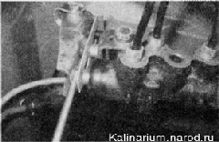
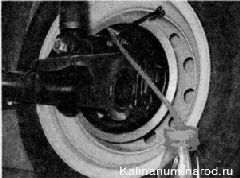
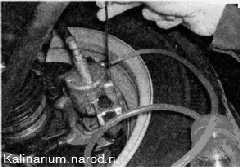

|
Прокачку гидравлического привода тормозной системы проводим после его ремонта, повлекшего нарушение герметичности системы и при подозрении на попадание в систему воздуха. В последнем случае сначала следует определить и устранить причину попадания воздуха в гидравлический привод и только затем приступать к его прокачке. Наличие воздуха в гидравлическом приводе тормозной системы определяется по «поведению» педали тормоза: она становится «мягкой» (не ощущается упор в конце хода педали) и опускается ниже своего обычного положения.
Для выполнения работы потребуется помощник, а также:
— специальный ключ для штуцера прокачки или накидной ключ на 8 мм;
— прозрачная виниловая трубка подходящего диаметра;
— емкость для слива тормозной жидкости;
новая тормозная жидкость, рекомендованная заводом-изготовителем.
— смотровая канава или эстакада (желательно).
Последовательность выполнения
1. Подготавливаем автомобиль к выполнению работы.
2. Отсоединяем колодку жгута проводов от разъема датчика недостаточного уровня тормозной жидкости и снимаем крышку бачка.
Во избежание попадания воздуха в гидравлический привод тормозной системы во время прокачки привода следим за тем, чтобы уровень тормозной жидкости в бачке не опускался ниже отметки MIN.
Если задняя ось автомобиля вывешена (автомобиль находится на подъемнике или установлен на подставках), регулятор давления перекроет путь тормозной жидкости к задним колесным цилиндрам. Поэтому для прокачки задних колесных цилиндров необходимо открыть клапан регулятора.
3. Для открытия клапана регулятора давления вставляем лезвие шлицевой отвертки между рычагом и пластиной, утапливая шток регулятора.

4. Очищаем штуцер тормозного цилиндра заднего правого колеса и поверхность вокруг него от грязи.
5. Снимаем защитный резиновый колпачок со штуцера прокачки.
6. Надеваем на штуцер прокачки специальный или накидной ключ на 8 мм, а затем прозрачную виниловую трубку (диаметр трубки должен быть таким, чтобы она плотно сидела на штуцере). Другой конец трубки опускаем в прозрачную емкость, частично заполненную тормозной жидкостью.

7. Помощник несколько раз нажимает педаль тормоза и после последнего нажатия удерживает педаль в нижнем положении.
8. Ослабив затяжку штуцера, отворачиваем его приблизительно на пол-оборота до начала выхода жидкости из штуцера.
9. После того как тормозная жидкость перестанет выходить из трубки, заворачиваем штуцер.
10. Помощник опять несколько раз нажимает педаль и удерживает ее в нажатом положении.
11. Повторяем действия, описанные в п. 7 и 8 (см. выше).
12. Прокачку проводим до тех пор, пока не прекратится выход тормозной жидкости с пузырьками воздуха из штуцера цилиндра, после чего окончательно затягиваем штуцер.
13. Снимаем со штуцера виниловую трубку и накидной ключ, надеваем на штуцер защитный резиновый колпачок.
14. Далее прокачиваем тормозной цилиндр переднего левого колеса.

15. Аналогичным образом прокачиваем цилиндры второго контура: заднего левого и переднего правого колес в указанной очередности, следя за уровнем жидкости в бачке главного тормозного цилиндра.
16. Нажав педаль тормоза, проверяем работу гидропривода и отсутствие подтекания жидкости из штуцеров прокачки. Если педаль «мягкая» или она опускается ниже своего обычного рабочего положения, повторно убеждаемся в герметичности системы и повторяем прокачку гидропривода.
|